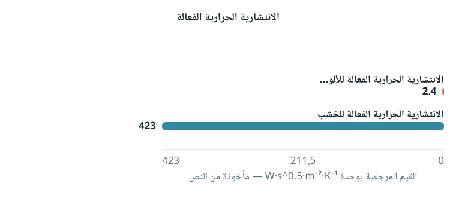

الانتشارية الحرارية الفعالة
Thermal effusivity
الانتشارية الحرارية الفعالة e تقيس سرعة امتصاص سطح مادة للحرارة عند لمسها: e = √(k·ρ·c_p). وهي التي تحدد الإحساس بالبرودة أو السخونة عند اللمس، وتُستعمل في حساب الحرارة المتلامسة.
حين يلمس جسمان مختلفا الحرارة، تنتقل الحرارة عبر سطح التلامس بمعدل يعتمد على قدرة كل مادة على امتصاص الحرارة لا على توصيلها فقط. والانتشارية الحرارية الفعالة تجمع التوصيل الحراري والكثافة والسعة الحرارية في مقدار واحد. مثال: الألومنيوم k = 237 W/(m·K) وρ = 2700 kg/m³ وc_p = 900 J/(kg·K): e = √(237×2700×900) = √(5.76×10⁸) = 2.40×10⁴ W·s^0.5/(m²·K). والخشب k = 0.150 وρ = 700 وc_p = 1700: e = √(0.150×700×1700) = √(1.785×10⁵) = 423. ولهذا يبدو الألومنيوم أبرد من الخشب عند الحرارة نفسها.
كيف تعمل الظاهرة؟
عند تلامس سطحين تنتقل الحرارة من الساخن إلى البارد، ويحدد معدل الانتقال الأولي قدرة كل سطح على سحب الحرارة من نقطة التلامس. والمادة ذات e العالية تسحب الحرارة بسرعة فتبرد سطح الجلد بسرعة، فيشعر الإنسان بالبرودة. ولهذا لا يعتمد الإحساس على الحرارة الفعلية للمادة بل على معدل انتقال الحرارة من الجلد إليها، وهو ما يفسر الإحساس المختلف بمعدن وقطعة خشب في الغرفة نفسها.
العلاقة بالأرقام
e = √(kρc_p)، ودرجة حرارة التلامس بين جسمين نصف لا نهائيين: T_s = (e₁T₁ + e₂T₂)/(e₁ + e₂). مثال: جلد e = 1000 وT = 33 °C يلامس فولاذاً e = 1.32×10⁴ وT = 20 °C: T_s = (1000×33 + 13200×20)/(1000+13200) = (33000+264000)/14200 = 20.9 °C. وعند لمس خشب e = 423: T_s = (33000+8460)/1423 = 29.1 °C، أي أدفأ بكثير.
مفاهيم متقاربة
يُفرَّق بين e وα: الأولى امتصاص سطحي والثانية انتشار داخلي، وα = k/(ρc_p) بينما e = √(kρc_p). ويُفرَّق بين e وk: k يصف الحالة المستقرة وe الحالة العابرة. ويُفرَّق بين e وc_p: الأخيرة لكل كيلوغرام. وأخيراً يُفرَّق بين e في التلامس المباشر وe في وجود طبقة هوائية، حيث الهواء يخفض الانتقال كثيراً.
حدود التطبيق
e صالحة للأجسام نصف اللانهائية، أي عندما تكون سماكة المادة أكبر من عمق الانتشار الحراري في زمن التلامس. ولا تصف التلامس الطويل حيث تصل الحرارة إلى الحد الآخر. ولا تصف التلامس مع طبقات وسيطة كالهواء أو الدهون. وأخيراً لا تصف المواد ذات التغير الطوري، حيث تُستهلك حرارة كامنة.

| الكمية | القيمة | المصدر |
|---|---|---|
| الانتشارية الحرارية الفعالة للألومنيوم | 2.40×10⁴ W·s^0.5·m⁻²·K⁻¹ | [1] |
| الانتشارية الحرارية الفعالة للخشب | 423 W·s^0.5·m⁻²·K⁻¹ | [1] |
المصادر
- 1 CODATA Value: Boltzmann constant — NIST — CODATA 2022 recommended values (2024). physics.nist.gov/cgi-bin/cuu/Value?k · اطُّلع عليه 2026-11-22
- 2 CODATA Value: molar gas constant — NIST — CODATA 2022 recommended values (2024). physics.nist.gov/cgi-bin/cuu/Value?r · اطُّلع عليه 2026-11-22
استشهد بهذا المصطلح
الصيغتان مبنيتان من بيانات الصفحة نفسها: العنوان والتاريخ ورابط النسخة المنشورة.
الانتشارية الحرارية الفعالة — Thermal effusivity. (2026). ديوان المعرفة — انفراد. https://infiradev.com/diwan/terms/term-thermal-effusivity.html
@misc{term-thermal-effusivity2026,
title = {الانتشارية الحرارية الفعالة},
titleaddon = {Thermal effusivity},
howpublished = {{ديوان المعرفة — انفراد} — مرجع علمي عربي},
year = {2026},
url = {https://infiradev.com/diwan/terms/term-thermal-effusivity.html},
urldate = {2026-11-26},
note = {مراجعة علمية: hermes (مراجعة معتمدة 2026-11-26)}
}
راجعه: hermes (مراجعة معتمدة 2026-11-26) · 2026-11-26 · آخر تحديث 2026-11-22